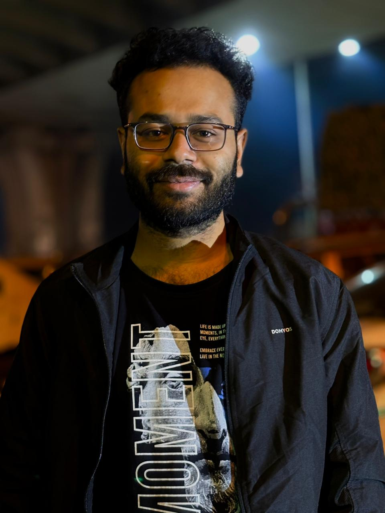

M.Tech Researcher · Data Scientist · New Delhi, India
I build LLM and agentic AI systems — grounded RAG pipelines that cite every claim back to the source, and LangGraph workflows that keep a human in the loop — backed by two years of production data engineering at Infosys.

I'm an M.Tech by Research student in Data Science at Delhi Technological University, working on Large Language Models and the systems built around them — retrieval, grounding, and agentic workflows.
Recent work includes a retrieval-augmented compliance assistant over 25 Indian and international regulatory frameworks, where every answer carries a framework, section, and page citation and out-of-corpus questions are refused outright, and an agentic job-hunt assistant built in LangGraph with a human-in-the-loop confirmation step.
Before this I spent two years at Infosys as a Test Analyst, validating data across 30+ large-scale ETL pipelines in Informatica PowerCenter and Teradata — where I learned that a pipeline is only as trustworthy as what you can prove about it. My earlier research was in image steganalysis, published with Springer.
001
A retrieval-augmented assistant over 27 regulatory documents covering 25 Indian and international frameworks (RBI, SEBI, IRDAI, PMLA, DPDP Act, IT Act, GDPR, ISO 27001), where every claim carries a framework, section, and page citation traceable back to the source PDF. Grounding is enforced with a cosine-distance floor, per-section diversification, and a citation range check, so out-of-corpus questions are refused outright at zero LLM cost instead of being answered from model memory. A confidently wrong answer traced to the ingest layer — not the prompt — led to restoring lost section boundaries, reflowing column-flattened tables, and re-splitting the 48.8% of chunks that were silently exceeding the embedder's 512-token limit. Retrieval is measured by a 30-case harness needing no model calls: MRR 0.819, Hit@6 of 92%, and 4/4 correct refusals.
002
An AI tool that reads a resume, infers the roles that actually fit, and searches across 8 job boards to return a ranked, clutter-free list of matching openings. The workflow is designed in LangGraph and includes a human-in-the-loop step that pauses to let the user confirm roles and set filters before searching. Results are ranked with TF-IDF plus an LLM, surfacing realistically reachable roles above far-off ones.
003
A modified AlexNet CNN for image steganalysis, adapting the architecture to classify images as cover (clean) versus stego (containing hidden embedded data). The baseline was augmented with a high-pass noise-residual preprocessing layer and average-pooling stages to amplify the weak steganographic signal, improving sensitivity to subtle pixel-level embedding. Trained and evaluated on the BOSSbase benchmark of 10,000 grayscale images, reaching 65.25% detection accuracy.
004
A signature-based steganalysis engine written in C that detects BMP images tampered by SteganographX Plus via its byte-level marker, paired with an LSB extraction routine that recovers hidden payloads directly from stego pixel data. A Feature-Augmented Password Cracking (FAPC) module exploits the signature and the tool's PRNG properties to recover its protection password and unlock concealed data, cutting brute-force time drastically while preserving full detection accuracy.
005
A real-time vehicle detection system in Python using OpenCV to identify and classify vehicle types from video streams. Each detected vehicle is logged with its type and timestamp, generating a structured record of traffic activity. Trained on the COCO dataset to recognise multiple vehicle classes such as cars, trucks, and buses.
Test Analyst — Infosys
Hyderabad, India · Aug 2021 – Jul 2023
Languages
GenAI, LLMs & Agentic AI
Machine & Deep Learning
Data Engineering
Core CS & Tools
This paper analyzes SteganographX Plus, identifying a fixed signature (an embedded email ID) via chosen-stego/message attacks and reverse-engineering its PRNG-based XOR encryption. The authors propose Feature-Augmented Password Cracking (FAPC), exploiting signature and PRNG properties to drastically cut brute-force password-cracking time versus traditional methods, while preserving full detection accuracy.
DOI: 10.1007/978-3-032-15398-2_12
M.Tech (by Research) — Data Science
Delhi Technological University, New Delhi
GPA: 7.71/10.0 · Jan 2026 – Present · Supervisor: Ms. Priya Singh
M.Sc. — Computer Science
Visva Bharati University, India
GPA: 7.49/10.0 · Aug 2023 – Jun 2025
B.Sc. — Computer Science (Honours)
University of Calcutta, India
GPA: 7.315/10.0 · Jul 2018 – Jun 2021
Open to research collaborations, AI/ML and GenAI engineering roles, data engineering positions, and interesting problems worth solving.
bitanubiswascs@gmail.com